LINE

의사와간호사img
arrow

의사와간호사img
arrow
LINE 헬스케어는 LINE상에서 의사와 건강상담을 할 수 있는 서비스입니다.
몸의 부조나 아이의 급병 등 다양한 불안에 의사가 직접 대답합니다.
LINE 헬스케어는
"원격건강의료상담"서비스입니다.
이른바 "온라인 진료"와 달리 구체적인 진단이나 약의 처방 등은
대응할 수 없습니다. 「이 증상, 곧바로 병원에 가야 할까?」 「무엇
과에 가면 좋을까?」등의 의문에, 의사가 경험·지식을 바탕으로
회답하겠습니다.
대응할 수 없는 것의 예
* 심요내과・정신과・치과등의 분야에 관한 상담은, 현재 대응하고 있지 않습니다.
달걀 요리를 먹은 2살 아들의 입 주위에 갑자기 붉은 포츠포츠가 나왔습니다. 곧 병원에 데려가는 것이 더 낫습니까?
밤이 되어 갑자기 열이 나왔습니다. 의사가 이미 폐쇄되었고 ... 어떻게해야합니까?
최근 일이 바쁜 탓도 있는지, 변비 기색입니다. 20대 초반까지는 이런 고민도 없었는데...
이하의 진료과에 관련된 불안·고민을 상담할 수 있습니다.
※버튼을 누르면 각과의 페이지로 이동합니다(스마트 폰 환경에서 봐 주세요)
지금 상담하기 / 상담 예약
즉시 알고 싶은 질문이나 의사에게 직접 듣고 싶은 상담에
대기 중의 의사에게 상담하는 「지금 상담한다」라고, 의사와의 상담 일시를 지정하는 「상담을 예약한다」. 의사와 30분간 실시간으로 상담할 수 있습니다.
상담이미지
나중에 답변을 받으세요.
상담하는 시간을 잡을 수 없는 분이나, 의사로부터의 응답에 갑작스런 필요가 없는 분에게
시간대를 불문하고 질문할 수 있는 투고형의 상담. 질문을 확인한 후 의사가 응답합니다.
상담이미지2
step1
LINE 건강 관리 시작
성명*, 연령, 신장 등의 기본 건강 정보를 등록하십시오. *익명으로의 상담도 가능합니다
step2
의사 선택
「두통」이나 「화분증」등의 테마나, 진료과로부터 상담하고 싶은 의사를 선택할 수 있습니다.
step3
상담 방법 선택
용도에 따라 「지금 상담한다」 「상담을 예약한다」 「나중에 회답을 받는다」로부터 선택해 주세요.
step4
상담 개시
어떤 고민이라도 부담없이 상담. 전문성을 가진 의사가 당신의 고민에 응답합니다.
이용요금img_1
이용요금img_2